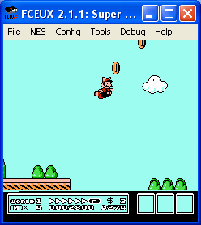

FCEUX is a Nintendo Entertainment System (NES), Famicom, and Famicom Disk System (FDS) emulator. It supports both PAL (European) and NTSC (USA/JPN) modes. It supports both Windows and SDL versions for cross compatibility.
the FCEUX concept is that of an "all in one" emulator that offers accurate emulation and the best options for both casual play and a variety of more advanced emulator functions. For pro users, FCEUX offers tools for debugging, rom-hacking, map making, Tool-assisted movies, and Lua scripting
FCEUX is an evolution of the original FCE Ultra emulator. Over time FCE Ultra had separated into many distinct branches.
The concept behind FCEUX is to merge elements from FCEU Ultra, FCEU rerecording, FCEUXD, FCEUXDSP, FCEUXDSP CE, and FCEU-mm into a single branch of FCEU.
As the X implies, it is an all-encompassing version of the FCEU emulator that provides the best of all worlds for the general player, the ROM-hacking community, and the Tool-Assisted Speedrun Community.
For more details see the version history
You can find out what we've been up to since the last release by checking the changelog directly.
We also have and IRC channel #fceu on freenode.net
FCEUX 2.1.5
04 June 2011
The 2.1.5 release fixes a lot of bugs and brings various improvements to the prior 2.1.4a release. In addition, the SDL port has improved signficantly; completely overhauling the GTK2 GUI, fixing many sound issues, and fixing a variety of bugs.